十五年里，星巴克成功建设了从店面到礼品卡、礼品卡到移动应用、再从移动应用到店面的核心产品闭环，基于这个闭环，星巴克将进行三种类型的创新：
- 基于闭环要素（店面、礼品卡、移动应用）的持续创新；
- 基于闭环要素之间关系的深度创新；
- 基于更大生态系统的生态创新。
持续创新
星巴克从未停止三大闭环要素的持续创新，它们分别是基于店面、礼品卡、以及移动应用的长达十五年的创新过程。
店面创新
星巴克意识到，店面永远是客户体验超过90%的场景，它始终是客户忠诚的核心价值，而店面的核心要素，则是：位置、形式、服务和产品。
2015年，在世界金融交易的中心纽约华尔街，星巴克推出了Starbucks Express的概念店模式，在538平方尺（约合50平方米）的面积里提供专为该区域顾客量身定做的咖啡和相关产品服务。
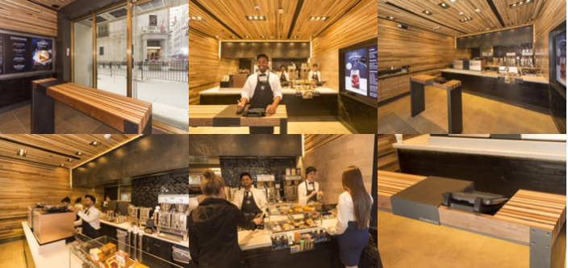
而近年来星巴克最重要的店面创新，则是星巴克臻选店（The Starbucks Reserve）——每个城市中少量臻选店中将提供更具独特性的咖啡选择、以及更选拔严格的咖啡技师，这一采用独立品牌的全新店面体验，好比AmazonPrime之于Amazon。
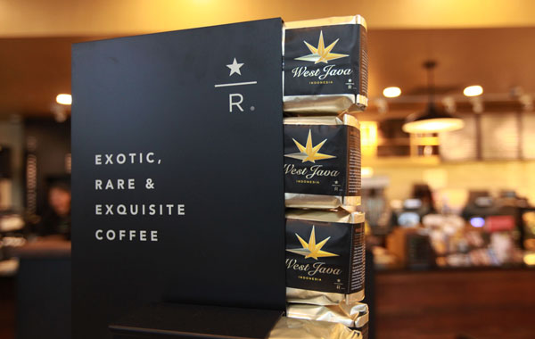
在星巴克臻选店之上，星巴克推出更为高端的The Starbucks Reserve Roastery and Tasting Room（星巴克臻选烘焙店）：面积超过1万5千平方呎，提供最高品质的咖啡产品、360度全透明的咖啡豆磨制、烘焙、到制作的全过程、包含全新的产品菜单、周边产品、以及各种定制化的个人服务。
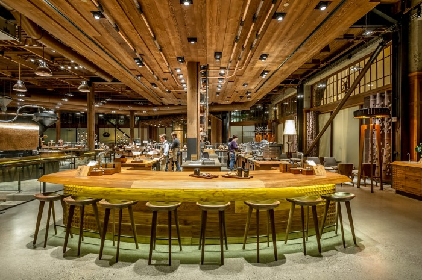
在美国本土，星巴克计划开设20间高端烘焙店作为标识的高端品牌店（参考），全球范围内将达到48家。到2021年，星巴克的全球总店面计划达到59000间，其中1000间为臻选店（参考）。
除了店面形式和位置方面的创新，星巴克将「时间」作为创新的维度，针对不同时间推出与之对应的服务和产品。2017年1月，星巴克宣布停止「Starbucks Evening」计划，这一计划的初衷在于推出例如酒水等产品争夺顾客稍晚时间的独特需求，439间美国本土店面参与了该计划，在该项目结束之后，星巴克的发言人如此评价（参考）：
星巴克永远将创新放在首位，不断满足客户在一天中不同时间段里的不同需要。「Starbucks Evening」计划是其中重要的项目之一，我们在这个项目中学到了很多，但今天我们将重点放在臻选店的开发上。
「Starbucks Evening」计划停止的同时，星巴克增加了午餐品类的供应，越来越多的顾客将星巴克作为午餐的目的地。未来，星巴克所提供的产品将大大超越咖啡品类。
礼品卡创新
正是礼品卡的空前成功，成就了星巴克移动体验，星巴克也并不将礼品卡看作是一个过渡方式，反而持续不断地在礼品卡相关体验上进行持续的创新。
早在十年前，客户就可以通过礼品卡完成注册账户和充值两个动作，那些被转送的礼品卡，都成为客户转化的重要介质。这种转化又有着天生的社交属性——礼品卡依然是中产阶级表达情感最直接的方式：在美国，如果因为装修噪音，邻居会送上一张星巴克礼品卡表示歉意。
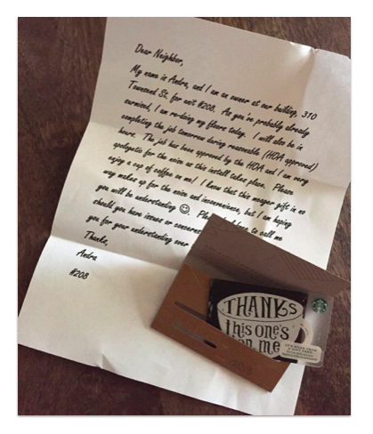
在移动应用上，客户可以轻易地完成礼品卡的购买、定制、和赠送。在中国，微信补足了其移动应用的不足，礼品卡通过微信进行传播（参考）。
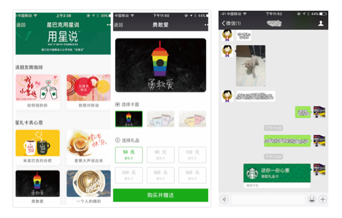
移动应用创新
有了店面和礼品卡的创新作为基础，移动应用的体验成为了最好的支持，除了移动应用本身的持续改进，还包括围绕在移动应用周边的创新。
星巴克的移动应用，历经4个大版本改进，最终形成目前的产品形态。
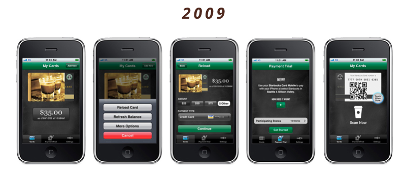
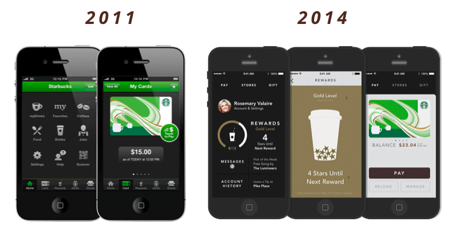
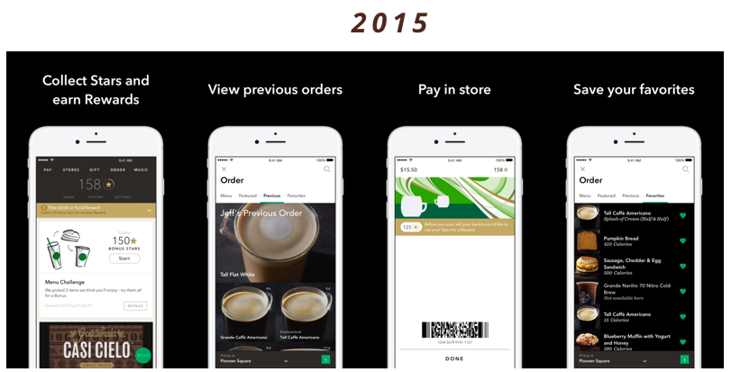
目前的产品形态大幅度提高了星巴克体验的个性化可能。2016年年初，星巴克每个周通过电子表格的方式管理30种不同类型的邮件促销内容发送给客户，6个月过后，由于移动支付和Mobile Order&Pay的普及，全新的平台可以发送40万种不同类型的促销页，而到2016年底，星巴克可以通过Inbox向客户推荐完全基于客户个人购买习惯、选择、以及所在位置的产品推荐——这意味着理论上超过2000万星巴克移动应用用户可以享受完全1对1的个性化内容。而从30到2000万，只用了一年的时间（参考）。
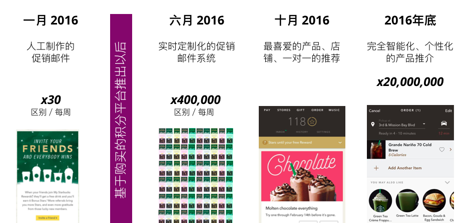
在周边，星巴克推出了多款带有移动性、个人化的小型产品增加客户在移动应用上的粘性，包括Starbucks for Life（左），以及Starbucks Passport（右）。
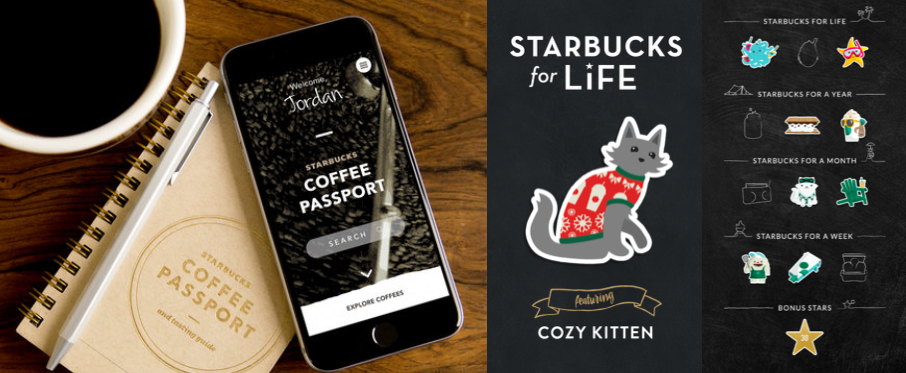
深度创新
星巴克不断提供更多的跨渠道体验，客户可以在店面、礼品卡、和移动应用之间进行转化。
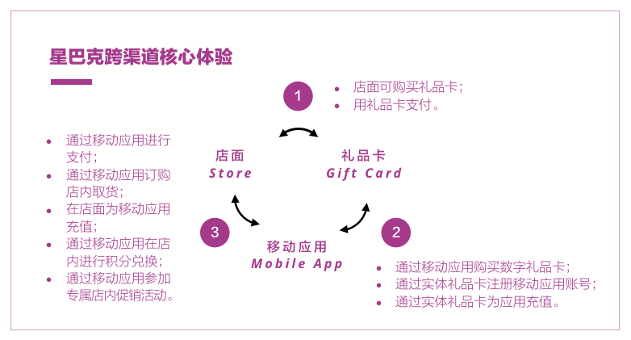
其灵活性还体现在从任何入口（店面、礼品卡、移动应用）进入时，都可以无缝进入整个体验闭环：
- 从店面开始、购买礼品卡现场进行支付、下载移动应用、冲入剩余金额；
- 先下载移动应用、线上购买礼品卡、在店面进行消费；
- 获得一个礼品卡、下载移动应用、在店面消费。
每种用户旅程都对应某个独特的客户场景，真正体现了跨渠道体验的核心：触点交互的灵活性。
生态创新
构建生态系统的理念，早在2007年就被星巴克引入——2007年星巴克和Apple Music合作（参考）推出店内的音乐服务，他们发现，咖啡只是更大生活场景的一部分，咖啡之前和咖啡之后，都有更广阔的机会。
在商业场景中，一个典型场景是会议的组织者为参与者准备咖啡，围绕在这个场景中，星巴克将多个需求整合成一个完整的体验，他们和微软Outlook合作（参考），所有通过Outlook发送的会议邀请，都可以通过星巴克插件在安排会议的同时订购咖啡，并在合适的时间进行配送，以往多个操作被集成为一个。
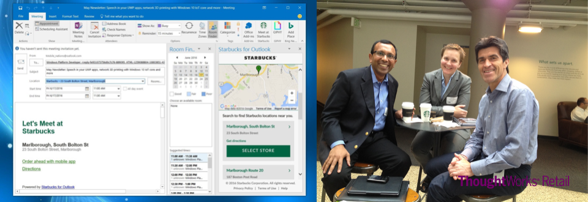
而企业会议本身就是一个独立的企业生态系统，里面存在有大量的服务和应用商，不难想象，星巴克的生态战略将把自己的产品和服务对接到更多企业生态中，例如视频会议平台、企业协作平台等等。
另一个生态是广泛的内容生态，星巴克将自己定位成超越家与办公场地的「第三地（The Third Place）」，越来越多的职业人把时间花在星巴克店中，那么在这个时间里的内容消费变成为其他内容提供商的价值点。
2015年5月，星巴克与音乐服务提供商Spotify达成合作（参考），这项合作将1000万星巴克会员、7000家美国门店、6000万Spotify用户连接在一起，星巴克会员将获得专属的店内Spotify音乐内容服务、而Spotify会员将可能获得更高的星巴克积分奖励。
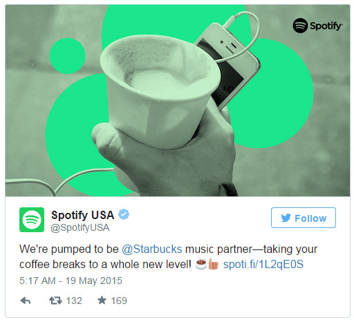
星巴克意识到，咖啡和其店面，可以成为连接其他生态价值的载体，目前它已经初步形成了跨越内容、出行、配送、娱乐等多个领域的生态系统。
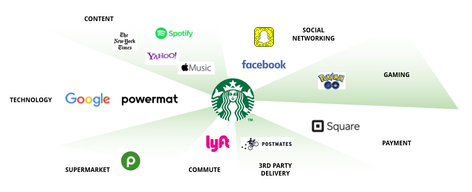
如此，由店面、礼品卡、移动应用所组成的「内生态」，开始通过生态创新的方式连接到「外生态」。
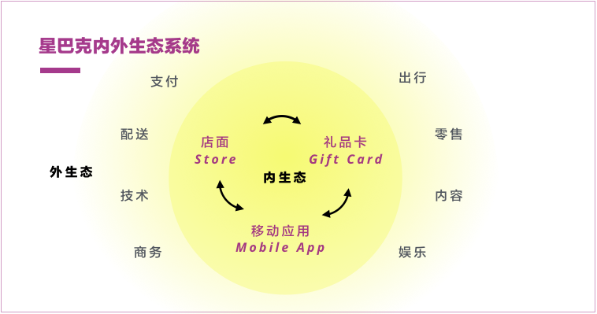
经历十五年的努力，星巴克最终形成完整的内外生态，那么，从这十五年里，对于面临数字转型的传统企业，可以学到什么，这便是本文最后一篇讨论的内容，在本文的最后一篇，我们将讨论：
- 发现线上到线下的中间介质；
- 持续解决高频顾客的问题；
- 组合式创新；
- 不轻易做大规模的技术投入。